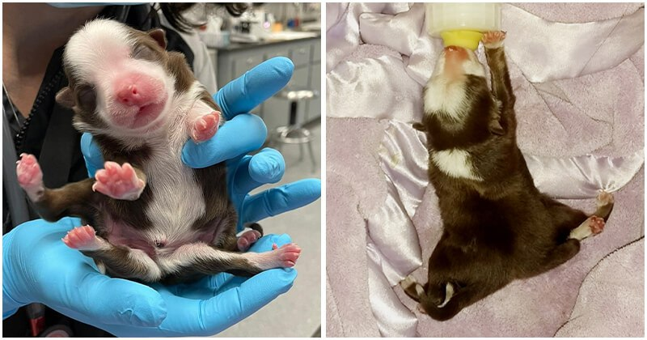

Puppy Born With Six Legs And Two Tails Survived Miraculously And Is Still Thriving

There are still many people born with unexpected birth defects in this world. Some are welcome and loved, some are hated for their differences. And animals are just the same. Skipper is an example of such a circumstance. The special puppy born with six legs and two tails was rejected by her own mom.
Neel Veterinary Hospital
The Aussie and Collie mix was born naturally on February 16 in Oklahoma alongside eight siblings. While all of her brothers and sisters were healthy and perfectly normal, Skipper’s situation was a little different. Even her mom abandoned her, so the tiny kitten was taken to Neel Veterinary Hospital for more proper medical care.
People believe Skipper is the very first one of her kind to survive, and they call her a “miracle.”
“This is a miracle named Skipper. Literally. She has survived longer than we suspect any other canine has (at just 4 days old – published research does not indicate one has been born alive) with her combination of congenital conditions,” the hospital introduced Skipper to the whole world through their Facebook page.
So, what exactly had happened that made Skipper so strange and unusual? According to the veterinarians at the hospital, it seemed like an egg in the cat mother’s womb was likely to split into twin but did not succeed completely, and the rare dog was the result of that process.
Thanks to her own will and the timely medical treatment, Skipper has overcome the predicament and is still thriving. The little girl also has duplicate organs from her waist down, but luckily they are still working properly.
Neel Veterinary Hospital
Skipper is now getting plenty of love and many people are praying for her. Some still show concern about her health, but her carers have confirmed that Skipper “is a happy and healthy puppy. She isn’t in any pain and she isn’t expected to be.” So, obviously we have nothing to worry about, at least by now.
Regarding her life ahead, Neel Veterinary Hospital announced on Facebook that they “do not plan on putting her down since there is no indication she is in pain or will be.” The vets expect Skipper to live a full happy life, and they have no idea what will come in the future so they are “expecting a journey”.
Neel Veterinary Hospital
The hospital also created a Facebook page for people to keep up with Skipper, which has attracted over 55 thousand followers so far.